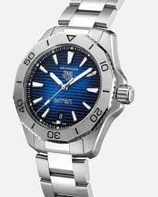

TAG Heuer
TAG Heuer es un fabricante suizo de relojes, especializado en relojes deportivos y cronógrafos,
con una fuerte vinculación con el mundo del automovilismo.
También manufactura accesorios, así como eyewear y teléfonos inteligentes bajo licencia manufacturados por
otras compañías usando la marca. TAG Heuer comenzó como Uhrenmanufaktur Heuer AG, fundada en 1860 por Edouard
Heuer en St-Imier, Suiza. En 1985 TAG Group compró la mayoría de la composición accionaria de la compañía formando
TAG Heuer.En 1999 el conglomerado francés LVMH compró cerca del 100% de la compañía Suiza.
